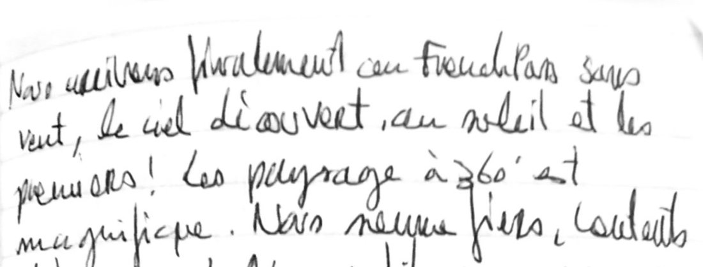

Carnet de route · automne 2011
Népal 2011
Deux cousins, deux mois, de moins en moins de filet
À l'automne 2011, mon cousin Romain et moi sommes partis près de deux mois au Népal, un sac de 55 litres chacun. Ces pages racontent ce voyage à partir des carnets que j'ai tenus en route. Il tient en quatre épisodes, et à chaque fois un peu moins de filet : un trek avec guide vers l'Everest, le tour du Dhaulagiri sans guide ni porteur, la vallée de la Kali Gandaki et le sanctuaire des Annapurnas, puis cinq jours à moto sur les routes de l'est.
Clément
Survolez un tracé pour voir l'épisode, cliquez pour le lire.
Les quatre chapitres
-
Chapitre 129 septembre – 20 octobre
Le trek de l'Everest
Quatorze jours avec un guide, de Lukla au Kala Patthar par Gokyo et le Cho La
Un guide, des lodges, les repas compris : la haute montagne à la manière de tout le monde.
- 14 jours de trek
- ≈ 121 km à pied
- ≈ +6 100 m
- point haut 5 550 m
-
Chapitre 224 octobre – 2 novembre
Le tour du Dhaulagiri
Dix jours sans guide ni porteur, des rizières de la Myagdi au French Pass
Plus de guide ni de porteur : la tente, deux cols à plus de 5 000 mètres, et nous deux.
- 10 jours de trek
- ≈ 104 km à pied
- ≈ +6 900 m
- point haut 5 360 m
-
Chapitre 33 – 17 novembre
Kali Gandaki et sanctuaire des Annapurnas
De Marpha au pied de l'Annapurna I, puis six jours à Pokhara
La descente de la Kali Gandaki, la remontée vers le sanctuaire, puis le retour en ville.
- 9 jours de trek
- ≈ 141 km à pied
- ≈ +7 100 m
- point haut 4 130 m
-
Chapitre 418 – 29 novembre
La virée à moto
Cinq jours sur les routes de l'est, jusqu'à la frontière tibétaine et Jiri, puis Katmandou une dernière fois
Deux motos louées à Thamel, sans papiers ni assurance, une tente, et rien de prévu.
- 5 jours de moto
- ≈ 427 km
- 4 nuits sous la tente

Récit tiré des carnets 1, 2 et 3, tenus pendant le voyage. Distances et dénivelés calculés sur les sentiers et routes cartographiés, à titre indicatif.